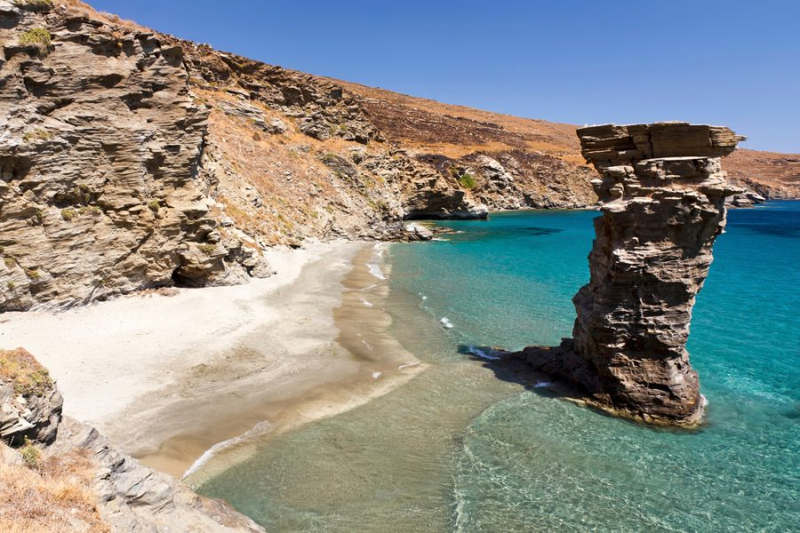

Let's test your knowledge
Select categories to begin the quiz:
Here is a challenge for you
Match the caption with the correct image!



Old Woman's Beach the jump
The Bridge of Love
The Statue Of Latent Seaman

Let's see what you've learned about the Treasures of Andros!